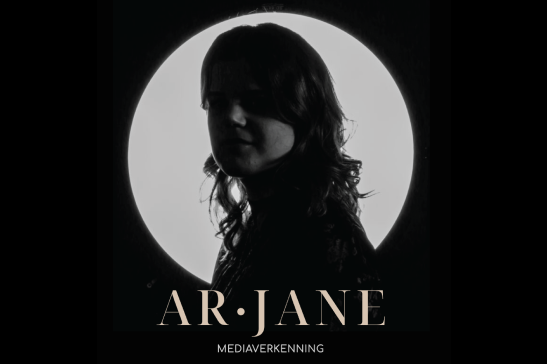

research

media verkenning
Om echt een goed gevoel te krijgen voor wat het betekent om een artiest te zijn
en wat qua
branding het belangrijkste is voor een artiest, hebben we gewerkt
aan een media verkenning.
Dit is het proces.

branding | netflix brand research
Een van de Focus Modules was een Brand Research. Ik vond dit een goede kans
om dit leerdoel te
vullen dus ik heb een Brand Research gedaan naar Netflix.
Dit was het proces.